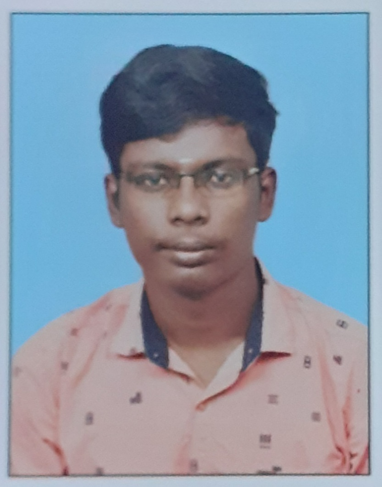

Summary
Results-driven Full Stack Developer with [1 years] of experience in designing,developing, and maintaining web
applications. Adept at utilizing a diverse range of technologies, including HTML, CSS, JavaScript, PHP,
CodeIgniter 3, and MySQL. Proven track record of delivering high-quality solutions and meeting project
deadlines.
Education
BE ECE
K.S.Rangasamy college of technology
Mar 2023
Work Experience
Web Developer
Falcon Square pvt Ltd ,Coimbatore.
Experience: 1 Year
- Developed and maintained web applications using HTML5, CSS, JavaScript and React.
- Implemented server-side logic using Node,PHP and leveraged CodeIgniter 3 framework for efficient development.
- Designed and optimized MySQL databases to ensure optimal performance
- Collaborated with cross-functional teams to gather requirements and deliver solutions aligned with business
objectives.
- Conducted code reviews and provided mentorship to junior developers.
Web Developer Intern
Falcon Square pvt Ltd ,Coimbatore.
Experience: 10 Months
- Gained hands-on experience with HTML5, CSS, JavaScript,React,Node, PHP, CodeIgniter 3, and MySQL during internship.
- Assisted in the development and enhancement of web applications, contributing to a comprehensive
understanding of the full stack.
- Collaborated with senior developers to troubleshoot and debug code.
- Participated in team meetings, contributing ideas and solutions to improve project outcomes.
Skills
- Front end
- Html5
- CSS
- JavaScript
- React
- Back end
- Node
- Express
- Php Codeigniter3
- Database
- Tool
- Version Control
- Soft Skills
- Team Collaboration,
Communication
Certification
- Udemy - Full Stack Web developer
Profile photo
